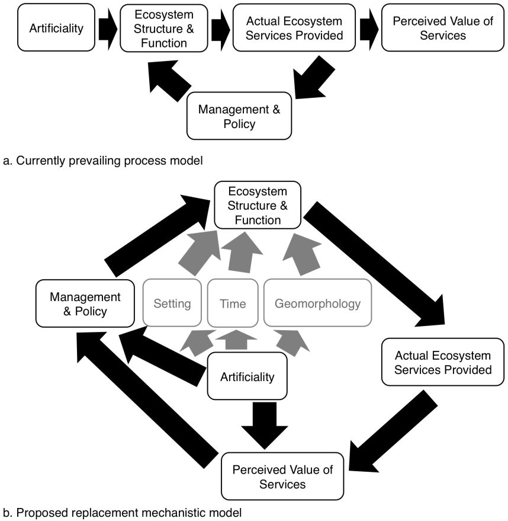

My dissertation focuses on the environmental science of artificial aquatic systems, especially ditches. Broadly, I am interested in how water connects and sustains socio-ecological systems.
A variety of waterbodies may count as artificial in different contexts. Artificiality is an insufficient explanation for their ecological condition; instead we should test process-based alternatives such as setting, design, and age. Better knowledge of these drivers could improve management potential over a potentially large expanse of ecosystems, known to sometimes provide ecosystem services and disservices of concern. Policy based on our current perception of these systems may reinforce negative expectations.
Irrigation-style ditches in network with a natural creek fresh from the Sierra Nevada Mountains in small Bishop, California, have statistically undifferentiable benthic macroinvertebrate communities from natural creek communities, given similar substrate and same season. Communities do decline in sensitive taxa (mayflies, stoneflies, and caddisflies) and biodiversity downstream across town, presumably as the influence of urban and agricultural land use increases. Communities in creeks that are close together are more similar than communities in ditches that are close together, suggesting some difference in community assembly.
Across 32 agricultural, forested, and freeway roadside ditch reaches in the North Carolina Coastal Plain, all supported predominantly wetland plants, and had at least some soil carbon and signs of wetness. Plant communities differed across site types, however, in response to landscape variables like development in the vicinity and local variables like apparent mowing (on freeway roadsides). Forested sites were more easterly and swampy. Agricultural sites had greater plant cover, including of taxa of driest and wettest wetland indicator groups.
The U.S. National Lakes Assessment, executed by the EPA, examined over 1000 lakes in 2007 and again in 2012, about half natural and half artificial reservoirs both times. They found differences in the conditions of these two categories, with reservoirs generally having more water quality issues, but they did not explore their underlying data to see why the differences occurred. Our structural equations model suggests that algal blooms form through the same process in both systems, but inputs are different.
